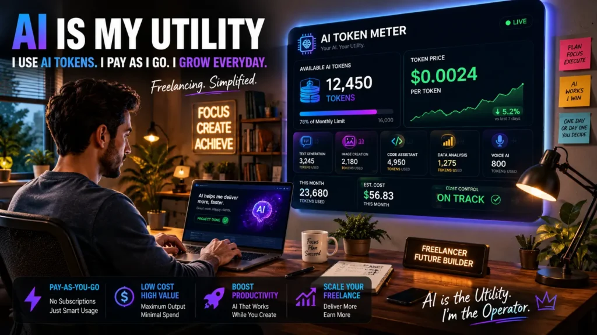

Introduction: The Dawn of a New Utility Era
Artificial Intelligence (AI) is no longer just a cutting-edge innovation—it is rapidly transforming into something far more foundational. Much like electricity, water, and the internet, Artificial Intelligence is becoming a utility that powers modern life, businesses, and entire economies.
This shift marks the beginning of a new technological era. Instead of being a product you buy or software you install, AI is becoming a service you consume. It is available on demand, scalable, and increasingly embedded into everyday systems.
Industry leaders, including OpenAI CEO Sam Altman, have highlighted this transition, suggesting that AI will soon be treated like electricity—metered, widely distributed, and essential. This evolution is not just a technological upgrade; it represents the foundation of the next tech revolution.
What Does It Mean for AI to Become a Utility?
A utility is a service that is essential, continuously used, and delivered through large-scale infrastructure. Electricity and water are classic examples. You don’t own them—you access them when needed and pay based on usage.
Applying this concept to AI means that intelligence itself becomes accessible on demand. Instead of building or owning AI systems, users simply tap into them whenever needed.
This model is already emerging through cloud-based AI services. Businesses and individuals use AI through APIs, paying for usage such as generated text, processed data, or automated workflows.
AI as a utility introduces the concept of “intelligence on demand.” Whether it’s writing content, analyzing data, coding software, or answering complex questions, AI becomes instantly available as a service.
The Evolution of AI: From Tools to Infrastructure
AI has undergone a rapid transformation over the past decade. Initially, it existed as a set of specialized tools embedded within software applications. These tools were limited in scope and required significant expertise to operate.
The next phase introduced AI as a service. With the rise of cloud computing, companies began offering AI capabilities through platforms that developers could access remotely. This made AI more accessible but still positioned it as a feature rather than a foundation.
Today, AI is entering its third phase—becoming infrastructure. It is no longer just an add-on but a core component of how systems operate. This shift is similar to how electricity evolved from a niche technology into a universal necessity.
The Infrastructure Powering AI Utilities
Behind every AI interaction lies a vast network of physical infrastructure. Data centers play a central role, housing thousands of servers that process and generate AI outputs.
These data centers rely on advanced hardware, particularly GPUs and specialized AI chips, to handle complex computations. The scale of these operations is enormous, requiring continuous upgrades and massive investment.
Cloud platforms act as the delivery mechanism for AI utilities. They allow users to access AI capabilities without owning the underlying infrastructure, making the technology more scalable and efficient.
Why Energy Is the Backbone of the AI Revolution
AI systems consume significant amounts of energy. Training large models and running real-time applications require continuous computational power, which translates into high electricity demand.
As AI adoption grows, energy consumption is becoming a critical factor in its development. This has sparked discussions around sustainability and the need for renewable energy sources.
The future of AI is closely tied to energy innovation. Renewable energy, nuclear power, and advanced cooling technologies will play key roles in supporting AI infrastructure.
In many ways, the growth of AI may drive the next wave of energy transformation, creating a deep connection between intelligence and power systems.
How AI as a Utility Will Transform the Global Economy
The emergence of AI as a utility signals the rise of what can be called the “intelligence economy.” In this new model, access to intelligence becomes a key driver of productivity and growth.
Businesses will increasingly rely on AI to perform tasks that once required human labor. This includes data analysis, customer service, content creation, and decision-making.
The pay-as-you-go model will lower barriers to entry, allowing startups and smaller companies to compete with larger organizations. This democratization of technology could lead to a surge in innovation.
At the same time, companies that effectively leverage AI will gain significant competitive advantages, reshaping industries and market dynamics.
The Impact on Jobs and the Future of Work
AI’s transformation into a utility will have a profound impact on the workforce. Many routine tasks are already being automated, and this trend is expected to accelerate.
However, rather than eliminating jobs entirely, AI is more likely to change how work is done. Employees will collaborate with AI systems, using them to enhance productivity and efficiency.
New roles will emerge as well, including positions focused on AI management, ethics, and integration. The workforce of the future will require adaptability and continuous learning.

Benefits of AI as a Utility
AI as a utility offers several key advantages. It provides scalability, allowing users to increase or decrease usage as needed. It improves accessibility by making advanced technology available to a wider audience.
Cost efficiency is another major benefit. Instead of investing in expensive infrastructure, users pay only for what they use. This makes AI more affordable and practical for businesses of all sizes.
Additionally, the availability of on-demand intelligence accelerates innovation, enabling faster development and experimentation.
Risks and Challenges of Utility-Scale AI
Despite its benefits, the utility model introduces significant challenges. One major concern is digital inequality. Not everyone may have equal access to advanced AI systems, potentially widening existing gaps.
Infrastructure costs are another issue. Building and maintaining AI systems requires substantial investment, which could limit competition.
Environmental concerns also play a role. AI systems consume energy and resources, raising questions about sustainability.
Finally, there is the risk of centralization. A small number of companies may control the majority of AI infrastructure, leading to potential monopolies.
Global Competition for AI Dominance
AI is becoming a strategic priority for countries around the world. Governments are investing heavily in infrastructure, research, and development to gain a competitive edge.
Control over AI capabilities can translate into economic power, technological leadership, and geopolitical influence.
This global competition mirrors past technological races, such as those for electricity, telecommunications, and the internet.
Regulation and the Future of AI Utilities
As AI becomes more essential, governments may begin to regulate it like traditional utilities. This could include rules around pricing, access, and data protection.
Ensuring fair access will be a key challenge. Policymakers will need to balance innovation with consumer protection.
Data privacy and security will also remain critical issues, especially as AI systems handle sensitive information.
The Next Tech Revolution: What Comes Next?
The future of AI as a utility includes the rise of autonomous AI agents capable of performing complex tasks independently.
AI will become deeply integrated into daily life, from smart homes to healthcare systems and education platforms.
There is also the possibility that AI could become extremely affordable, potentially reaching a point where it is “too cheap to meter.” This would make intelligence universally accessible.
What This Means for Businesses and Individuals
Businesses must adapt by integrating AI into their operations and investing in workforce training. Those who embrace AI early will gain a competitive advantage.
Individuals should focus on developing skills that complement AI, such as critical thinking, creativity, and adaptability.
Understanding how to use AI effectively will become an essential skill in the modern world.
Conclusion: Intelligence as the New Infrastructure
Artificial Intelligence is on the path to becoming one of the most important utilities in human history. Its transformation from a tool to a foundational service marks a significant turning point.
As AI becomes more accessible and integrated into society, it will drive the next tech revolution, reshaping industries, economies, and daily life.
The future will not just be powered by machines, but by intelligence itself—delivered on demand, scalable, and essential to progress.
Frequently Asked Questions (FAQs) About AI as a Utility
What does it mean for AI to be a utility?
When Artificial Intelligence becomes a utility, it means AI is no longer treated as a standalone product or software you purchase and install. Instead, it is delivered as an on-demand service—similar to electricity, water, or the internet. Users can access AI whenever they need it and pay only for the amount they use, often measured in units like tokens, compute time, or API calls.
This model shifts AI from ownership to consumption. Businesses no longer need to build expensive infrastructure or hire large technical teams to develop AI systems. Instead, they can tap into powerful AI capabilities instantly through cloud platforms. This approach increases accessibility, scalability, and efficiency, making advanced intelligence available to startups, enterprises, and individuals alike.
Why is AI often compared to electricity?
AI is compared to electricity because both technologies rely on large-scale infrastructure and serve as foundational enablers of modern life. Electricity powers homes, industries, and digital systems without users needing to understand how it is generated or distributed. Similarly, AI operates behind the scenes, powering applications, automating tasks, and enabling decision-making without requiring users to manage the underlying complexity.
Another key similarity is scalability. Just as electricity can be scaled up or down depending on demand, AI can be consumed dynamically based on usage. This makes it highly flexible and efficient for businesses. Additionally, both technologies drive innovation across multiple industries, acting as catalysts for economic growth and transformation.
How will AI utilities affect jobs and employment?
AI utilities will significantly reshape the job market, but not necessarily in a purely negative way. While certain repetitive and routine tasks—such as data entry, basic analysis, and customer support—may become automated, AI will also create new opportunities and enhance human productivity.
Instead of replacing workers entirely, AI is more likely to augment human capabilities. Professionals will be able to accomplish more in less time by leveraging AI tools for research, content creation, coding, and decision-making. This will lead to the emergence of new roles such as AI specialists, prompt engineers, data ethicists, and human-AI collaboration experts.
The key challenge will be workforce adaptation. Individuals and organizations must invest in reskilling and upskilling to stay relevant in an AI-driven economy.
Will AI become cheaper in the future?
Yes, AI is expected to become significantly more affordable over time. As technology advances, improvements in hardware, software optimization, and infrastructure scaling will reduce the cost of delivering AI services.
Historically, technologies like computing power, internet bandwidth, and data storage have followed a similar pattern—becoming cheaper and more accessible as adoption increases. AI is likely to follow this trajectory, potentially reaching a point where it becomes so inexpensive that it is widely available to almost everyone.
This trend could lead to a future where AI is “too cheap to meter,” meaning its cost becomes negligible compared to its value.
What industries will AI utilities impact the most?
AI utilities will have a transformative impact across nearly all industries. Healthcare will benefit from AI-driven diagnostics, personalized treatment plans, and faster drug discovery. Finance will see advancements in fraud detection, risk analysis, and automated trading. Education will become more personalized through AI tutors and adaptive learning systems.
Technology and software development will be heavily influenced by AI-assisted coding and automation. Manufacturing will leverage AI for predictive maintenance and process optimization. Marketing and media industries will use AI for content creation and customer insights.
How does AI as a utility change business models?
AI as a utility introduces a shift from ownership-based models to usage-based models. Businesses no longer need to invest heavily in infrastructure. Instead, they can access AI capabilities through subscription or pay-as-you-go pricing models.
This allows companies to scale operations efficiently. Startups can compete with larger companies by accessing the same powerful tools, while enterprises can reduce costs and improve efficiency through automation.
What are AI tokens and how do they relate to pricing?
AI tokens are units used to measure the amount of data processed by AI systems. Every interaction—input and output—is counted in tokens. AI providers use these tokens as a pricing mechanism, ensuring users pay only for what they consume.
This flexible model allows individuals, freelancers, and large organizations to scale their usage according to their needs without overpaying.
What are the risks of AI becoming a utility?
AI as a utility introduces risks such as centralization of power, where a few companies control infrastructure. This could limit competition and create dependency.
There is also the risk of digital inequality, where access to advanced AI may not be equally distributed. Additionally, concerns around data privacy, security, and ethical use of AI will continue to grow as adoption increases.
How does AI impact energy consumption and sustainability?
AI systems require significant computational power, which leads to high energy consumption. Training and running AI models can demand large amounts of electricity and cooling resources.
However, innovations in energy-efficient hardware and renewable energy are helping reduce this impact. AI can also improve sustainability by optimizing energy usage, reducing waste, and improving operational efficiency across industries.
What skills are needed to succeed in an AI-driven economy?
Success in an AI-driven economy requires a mix of technical and human skills. Understanding how to use AI tools, analyze data, and adapt to new technologies is essential.
Equally important are skills like creativity, critical thinking, and problem-solving. As AI automates routine work, human value will shift toward innovation and strategic thinking.
Is AI as a utility the future of technology?
Yes, AI as a utility is widely considered the future of technology. Just like electricity and the internet, AI is becoming foundational infrastructure that powers modern systems.
This shift will redefine how businesses operate, how individuals work, and how economies grow. Intelligence will become accessible on demand, transforming every aspect of life.
How can individuals and businesses prepare for AI as a utility?
Preparation starts with learning and adaptation. Businesses should integrate AI into operations, experiment with tools, and train employees. Individuals should focus on developing AI literacy and using AI to enhance productivity.
Those who adopt AI early and strategically will gain a significant advantage in the evolving digital landscape.